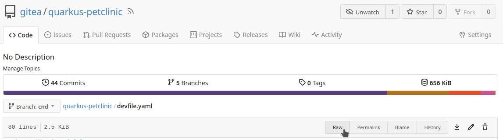
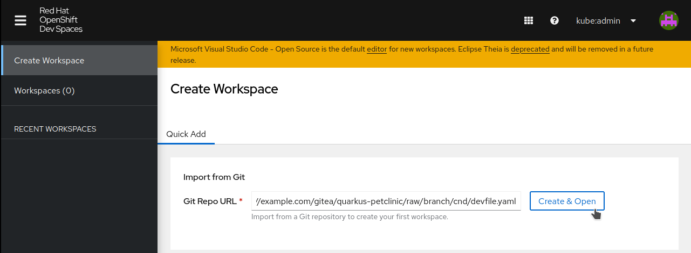
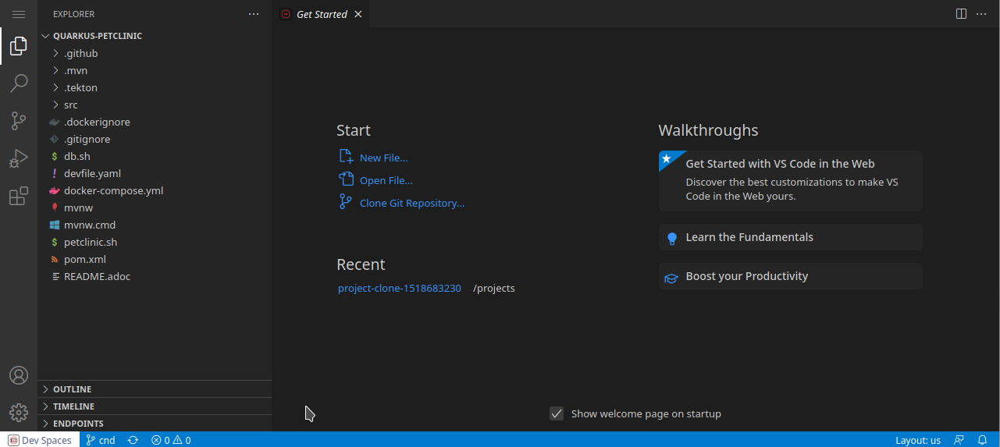

Red Hat OpenShift Dev Spaces
Built on Eclipse Che, Red Hat OpenShift Dev Spaces provides a consistent, secure, zero-configuration development environment using Kubernetes and containers.
In this section, we will create our first workspace:
-
Open the
Giteagit server (demo-cicdOpenShift project) and navigate to thequarkus-petclinicrepository. Ensure thecndbranch is selected. -
Open the
devfile.yaml, clickRaw, and copy the URL.

-
Open the Red Hat OpenShift Dev Spaces dashboard (
demo-devspacesOpenShift project) and clickCreate Workspace.

-
Paste the
devfile.yamlURL into theGit Repo URLfield and clickCreate & Open. -
Wait for the workspace to be fully created.
